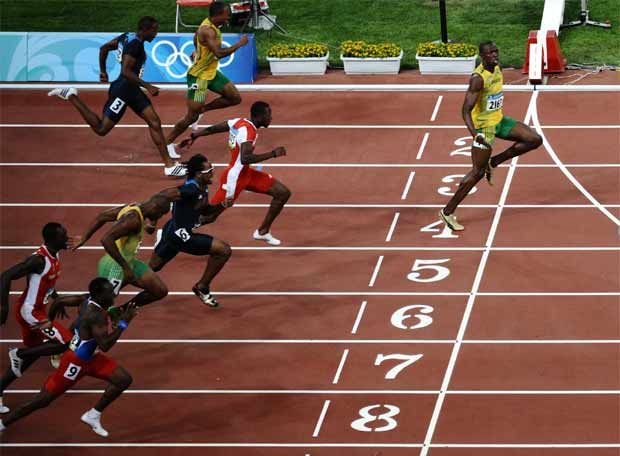

Apam Senior High School popularly known as "GREAT APASS" was
founded by the late Rev. J. W. De-Graft Johnson on the morning of
20th Fbruary 1953. The school started from very humble beginning
in a cocoa shed at "Apaa Paado" (Apam plains) near the "Baka" (i.e close to the
lagoon in Apam) with students population of twenty and a staff of two as a Day Secondary School.
The vision of the school is to produce hardworking individuals who are
of service to mankind
In terms of mission, Apam Snior High School exist to provide a conducive
atmosphere for character training, excellence in academics and sports all
in a bid to produce knowledgeable, useful and round citizens imbued with
good character and skills that will epitomize the school's motto: "Obra Pa
Gya Owura Kwan" (character and Efficiency).
Obra Pa Gya Owura Kwan
(character and Efficiency)
Latest News
Be the first to read our campus latest news

Sports0
Apam tops them all in Zone Four
Athletic Meet.[Read More]
Posted By: Brooks Morgan
Wed 28 sptember, 2022
Admission0
APAM SENIOR HIGH ADMISSION. [Read More]
Posted By: Brooks Morgan
19 May, 2022
Celebration0
Apam Secondary School [APASS]
Marks 70 Years of Excellence:
Sustaining Educational Triumphs [Read More]
The West African Examination Council (WAEC) takes into
account several factors when selecting the best institution.
Trending Courses
Certified Teachers
Graduation certificate
Online Course Facilities
Free Books & Library
Free Study Matertials
Apam Senior High School, Having laid the firm
foundation of the school by Rev. Johnson, classes were
conducted in a tottering cocoa shed at Apaa Paado. On
the 16th of April, 1960, a new site, known as Mmofra
Mfa Adwen, was commissioned by Lord Listowel, the
last Governor General of Ghana. This is where the
school is presently located.